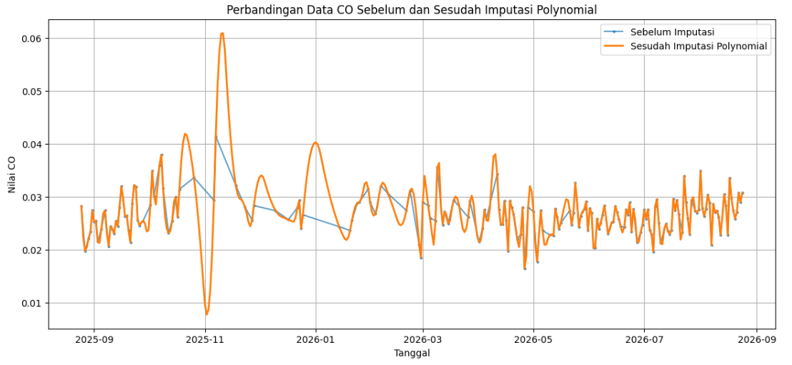
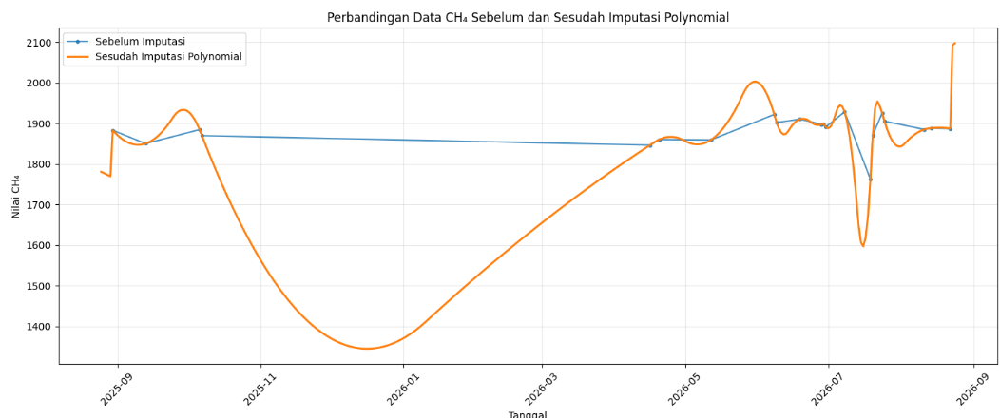
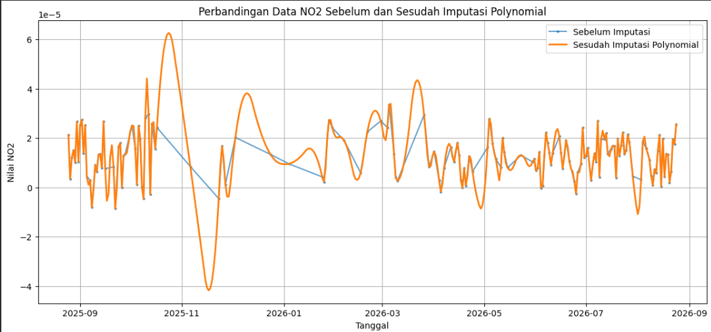
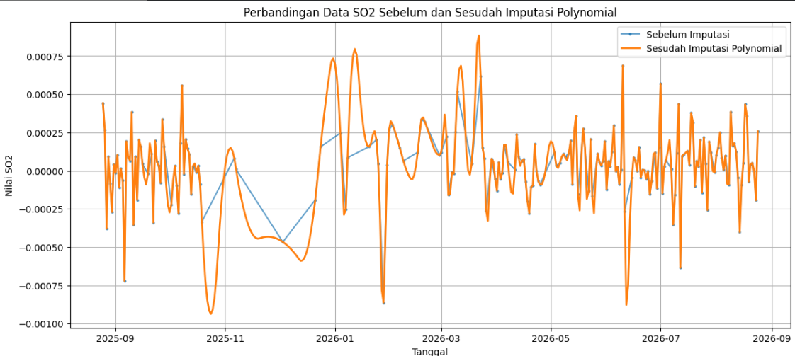

Pengolahan Data Polutan CO, CH₄, NO₂, dan SO₂ di Daerah Guluk-guluk Sumenep Menggunakan Imputasi Polinomial dan Ekstraksi Fitur TSFEL#
1. Data Polutan dan Lokasi Wilayah Pengamatan#
Data yang digunakan dalam tugas ini terdiri dari empat polutan, yaitu:
No. |
Polutan |
Data |
|---|---|---|
1 |
CO |
Carbon Monoxide |
2 |
CH₄ |
Methane |
3 |
NO₂ |
Nitrogen Dioxide |
4 |
SO₂ |
Sulfur Dioxide |
Data polutan digunakan untuk periode 25 Agustus 2025 sampai 24 Agustus 2026, sehingga setiap polutan memiliki target 365 data harian.
Koordinat Wilayah Pengamatan#
Wilayah pengamatan yang digunakan pada tugas ini merupakan area polygon dengan titik koordinat berikut. Koordinat pada file peta menggunakan urutan latitude, longitude.
No. |
Latitude |
Longitude |
|---|---|---|
1 |
-7.050613 |
113.655634 |
2 |
-7.066788 |
113.655291 |
3 |
-7.075301 |
113.660786 |
4 |
-7.077344 |
113.675552 |
5 |
-7.073428 |
113.682592 |
6 |
-7.056402 |
113.683623 |
7 |
-7.049081 |
113.683623 |
8 |
-7.045846 |
113.670229 |
9 |
-7.050613 |
113.655634 |
Titik ke-9 merupakan titik penutup polygon, sehingga sama dengan titik pertama. File peta juga menggunakan titik pusat latitude -7.06 dan longitude 113.67 dengan zoom level 14.
Kode Koordinat#
koordinat_aoi = [
[-7.050613, 113.655634],
[-7.066788, 113.655291],
[-7.075301, 113.660786],
[-7.077344, 113.675552],
[-7.073428, 113.682592],
[-7.056402, 113.683623],
[-7.049081, 113.683623],
[-7.045846, 113.670229],
[-7.050613, 113.655634]
]
Kode Folium untuk Jupyter Book#
Kode berikut dapat digunakan untuk menampilkan kembali wilayah pengamatan secara langsung pada Jupyter Book:
import folium
# Titik pusat wilayah pengamatan
pusat = [-7.06, 113.67]
# Membuat peta
m = folium.Map(
location=pusat,
zoom_start=14
)
# Koordinat wilayah pengamatan
koordinat_aoi = [
[-7.050613, 113.655634],
[-7.066788, 113.655291],
[-7.075301, 113.660786],
[-7.077344, 113.675552],
[-7.073428, 113.682592],
[-7.049081, 113.683623],
[-7.045846, 113.670229],
[-7.050613, 113.655634]
]
# Polygon wilayah pengamatan
folium.Polygon(
locations=koordinat_aoi,
color="blue",
weight=3,
fill=True,
fill_color="blue",
fill_opacity=0.2,
tooltip="Wilayah Pengamatan"
).add_to(m)
# Titik pusat pengamatan
folium.Marker(
pusat,
tooltip="Titik Pengamatan"
).add_to(m)
m
2. Penanganan Missing Value — Imputasi Polinomial#
2.1 Metode#
Sesuai perubahan instruksi tugas, metode pengisian missing value yang sebelumnya menggunakan interpolasi linier diganti sepenuhnya dengan interpolasi polinomial.
Data disusun menjadi 365 hari, kemudian nilai yang hilang diestimasi berdasarkan pola data menggunakan polinomial orde 2.
Bentuk umum polinomial orde 2:
\([ y = ax^2 + bx + c ]\)
Keterangan:
Simbol |
Keterangan |
|---|---|
\((y)\) |
Nilai yang diperkirakan |
\((x)\) |
Posisi/waktu |
\((a)\) |
Koefisien \((x^2)\) |
\((b)\) |
Koefisien \((x)\) |
\((c)\) |
Konstanta |
Dalam Python digunakan:
df["Rata-rata (Mean)"] = (
df["Rata-rata (Mean)"]
.interpolate(method="polynomial", order=2)
)
2.2 Contoh Perhitungan Manual#
Misalkan terdapat tiga data:
x |
y |
|---|---|
1 |
4 |
2 |
9 |
3 |
16 |
Model polinomial:
\([y=ax^2+bx+c]\)
Substitusi data pertama:
\([4=a+b+c]\)
Data kedua:
\([9=4a+2b+c]\)
Data ketiga:
\([16=9a+3b+c]\)
Dari penyelesaian ketiga persamaan diperoleh:
\([a=1,quad b=2,quad c=1]\)
Sehingga persamaannya:
\([y=x^2+2x+1 ]\)
Jika nilai pada (x=2.5) hilang:
\([y=(2.5)^2+2(2.5)+1 ]\)
\([y=6.25+5+1 ]\)
\([boxed{y=12.25} ]\)
Jadi nilai yang hilang pada (x=2.5) diperkirakan sebesar 12.25.
2.3 Hasil Imputasi#
Polutan |
Jumlah Data |
NaN Setelah Imputasi |
|---|---|---|
CO |
365 |
0 |
CH₄ |
365 |
0 |
NO₂ |
365 |
0 |
SO₂ |
365 |
0 |
Tabel Perbandingan Data Sebelum dan Sesudah Imputasi#
Polutan |
Jumlah Data Sebelum |
Missing Sebelum |
Jumlah Data Sesudah |
Missing Sesudah |
Metode Imputasi |
|---|---|---|---|---|---|
CO |
191 |
0 |
365 |
0 |
Polynomial |
CH₄ |
21 |
0 |
365 |
0 |
Polynomial |
NO₂ |
153 |
0 |
365 |
0 |
Polynomial |
SO₂ |
199 |
0 |
365 |
0 |
Polynomial |




3. Deteksi dan Perbaikan Outlier#
3.1 Metode IQR#
Outlier dideteksi menggunakan Interquartile Range (IQR).
Rumus:
\([IQR=Q3-Q1 ]\)
Batas bawah:
\([Lower=Q1-1.5(IQR) ]\)
Batas atas:
\([Upper=Q3+1.5(IQR) ]\)
Nilai yang berada di bawah batas bawah atau di atas batas atas dianggap sebagai outlier.
3.2 Jumlah Outlier#
Hasil deteksi pada dataset hasil preprocessing polinomial:
Polutan |
Jumlah Outlier |
|---|---|
CO |
27 |
CH₄ |
0 |
NO₂ |
28 |
SO₂ |
24 |
3.3 Tanggal Outlier#
Tanggal outlier diperoleh langsung dari dataset menggunakan kode berikut:
import pandas as pd
def cek_outlier(df, nama_kolom, nama_polutan):
Q1 = df$[ama_kolom].quantile(0.25)
Q3 = df[nama_kolom].quantile(0.75)
IQR = Q3 - Q1
batas_bawah = Q1 - 1.5 * IQR
batas_atas = Q3 + 1.5 * IQR
outlier = df[
(df[nama_kolom] < batas_bawah) |
(df[nama_kolom] > batas_atas)
].copy()
outlier["Polutan"] = nama_polutan
return outlier[
["Polutan", "Tanggal", nama_kolom]
]
outlier_co = cek_outlier(
df_co, "Rata-rata (Mean)", "CO"
)
outlier_ch4 = cek_outlier(
df_ch4, "Rata-rata (Mean)", "CH4"
)
outlier_no2 = cek_outlier(
df_no2, "Rata-rata (Mean)", "NO2"
)
outlier_so2 = cek_outlier(
df_so2, "Rata-rata (Mean)", "SO2"
)
tabel_outlier = pd.concat(
[
outlier_co,
outlier_ch4,
outlier_no2,
outlier_so2
],
ignore_index=True
)
print(tabel_outlier)
Untuk mendapatkan daftar tanggal saja:
for polutan, data in [
("CO", outlier_co),
("CH4", outlier_ch4),
("NO2", outlier_no2),
("SO2", outlier_so2)
]:
print("n", polutan)
print(data["Tanggal"].dt.strftime("%Y-%m-%d").tolist())
Tabel Ringkasan Outlier#
Polutan |
Total Outlier |
Tanggal |
|---|---|---|
CO |
27 |
Dihasilkan dari |
CH₄ |
0 |
Tidak ada |
NO₂ |
28 |
Dihasilkan dari |
SO₂ |
24 |
Dihasilkan dari |
Kode tersebut sengaja digunakan agar tanggal yang tercatat di laporan benar-benar sama dengan dataset revisi polinomial, bukan menggunakan hasil lama dari metode linier.
3.4 Perbaikan Outlier#
Outlier kemudian ditandai sebagai NaN dan diisi kembali menggunakan interpolasi polinomial:
import numpy as np
def perbaiki_outlier_polynomial(df):
df = df.copy()
Q1 = df["Rata-rata (Mean)"].quantile(0.25)
Q3 = df["Rata-rata (Mean)"].quantile(0.75)
IQR = Q3 - Q1
lower = Q1 - 1.5 * IQR
upper = Q3 + 1.5 * IQR
kondisi_outlier = (
(df["Rata-rata (Mean)"] < lower) |
(df["Rata-rata (Mean)"] > upper)
)
df.loc[
kondisi_outlier,
"Rata-rata (Mean)"
] = np.nan
df["Rata-rata (Mean)"] = (
df["Rata-rata (Mean)"]
.interpolate(
method="polynomial",
order=2
)
.bfill()
.ffill()
)
return df
Setelah perbaikan, data tetap memiliki 365 hari dan tidak memiliki missing value.
4. Ekstraksi Fitur TSFEL#
4.1 Tujuan#
Dataset setiap polutan terdiri dari 365 nilai time series harian.
TSFEL digunakan untuk mengubah time series tersebut menjadi sejumlah karakteristik atau fitur numerik.
Ekstraksi dilakukan pada dataset hasil imputasi dan perbaikan outlier menggunakan metode polinomial.
Setiap polutan menghasilkan:
\([ 68text{ fitur} ]\) Dengan empat polutan:
\([ 4times68=boxed{272text{ fitur}} ]\)
4.2 Instalasi dan Persiapan#
!pip install tsfel
import pandas as pd
import numpy as np
import tsfel
cfg = tsfel.get_features_by_domain()
Contoh membaca data:
df_co = pd.read_excel(
"CO_clean_polynomial.xlsx"
)
data_co = df_co[
"Rata-rata (Mean)"
].to_numpy()
Pengecekan:
print("Jumlah data:", len(data_co))
print("NaN:", np.isnan(data_co).sum())
print("Inf:", np.isinf(data_co).sum())
Target:
Jumlah data: 365
NaN: 0
Inf: 0
4.3 Kode Ekstraksi Fitur#
Fungsi berikut digunakan untuk mengambil fitur TSFEL:
def ambil_fitur(
cfg,
domain,
nama_tsfel,
data
):
detail = cfg[domain][nama_tsfel]
fungsi = eval(detail["function"])
parameter = detail["parameters"]
if isinstance(parameter, dict):
nilai = fungsi(
data,
**parameter
)
else:
nilai = fungsi(data)
if isinstance(nilai, dict):
nilai = nilai["values"]
return float(
np.nanmean(
np.asarray(
nilai,
dtype=float
)
)
)
Contoh penggunaan:
hasil_co = {}
hasil_co["f1_abs_energy"] = ambil_fitur(
cfg,
"statistical",
"Absolute energy",
data_co
)
hasil_co["f2_auc"] = ambil_fitur(
cfg,
"temporal",
"Area under the curve",
data_co
)
hasil_co["f3_autocorr"] = ambil_fitur(
cfg,
"temporal",
"Autocorrelation",
data_co
)
Fitur khusus seperti ECDF, ECDF slope, LPCC, MFCC, Spectrogram mean coefficient, dan fitur wavelet diproses sesuai bentuk output TSFEL. Jika menghasilkan beberapa nilai, digunakan rata-rata nilai keluaran agar satu fitur direpresentasikan sebagai satu kolom.
Setelah semua fitur diperoleh:
hasil_co = pd.DataFrame(
[[
hasil_co[nama]
for nama in nama_fitur_68
]],
columns=nama_fitur_68
)
print("Jumlah fitur:", len(hasil_co.columns))
print("Jumlah baris:", len(hasil_co))
print(
"Jumlah NaN:",
hasil_co.isna().sum().sum()
)
Hasil:
Jumlah fitur: 68
Jumlah baris: 1
Jumlah NaN: 0
Prosedur yang sama diterapkan pada CH₄, NO₂, dan SO₂.
5. Daftar 68 Fitur TSFEL#
No |
Nama Fitur |
No |
Nama Fitur |
|---|---|---|---|
f1 |
abs_energy |
f35 |
median_abs_diff |
f2 |
auc |
f36 |
median_diff |
f3 |
autocorr |
f37 |
median_frequency |
f4 |
average_power |
f38 |
mfcc |
f5 |
calc_centroid |
f39 |
mse |
f6 |
calc_max |
f40 |
negative_turning |
f7 |
calc_mean |
f41 |
neighbourhood_peaks |
f8 |
calc_median |
f42 |
petrosian_fractal_dimension |
f9 |
calc_min |
f43 |
pk_pk_distance |
f10 |
calc_std |
f44 |
positive_turning |
f11 |
calc_var |
f45 |
power_bandwidth |
f12 |
dfa |
f46 |
rms |
f13 |
distance |
f47 |
skewness |
f14 |
ecdf |
f48 |
slope |
f15 |
ecdf_percentile |
f49 |
spectral_centroid |
f16 |
ecdf_percentile_count |
f50 |
spectral_decrease |
f17 |
ecdf_slope |
f51 |
spectral_distance |
f18 |
entropy |
f52 |
spectral_entropy |
f19 |
fundamental_frequency |
f53 |
spectral_kurtosis |
f20 |
higuchi_fractal_dimension |
f54 |
spectral_positive_turning |
f21 |
hist_mode |
f55 |
spectral_roll_off |
f22 |
human_range_energy |
f56 |
spectral_roll_on |
f23 |
hurst_exponent |
f57 |
spectral_skewness |
f24 |
interq_range |
f58 |
spectral_slope |
f25 |
kurtosis |
f59 |
spectral_spread |
f26 |
lempel_ziv |
f60 |
spectral_variation |
f27 |
lpcc |
f61 |
spectrogram_mean_coeff |
f28 |
max_frequency |
f62 |
sum_abs_diff |
f29 |
max_power_spectrum |
f63 |
wavelet_abs_mean |
f30 |
maximum_fractal_length |
f64 |
wavelet_energy |
f31 |
mean_abs_deviation |
f65 |
wavelet_entropy |
f32 |
mean_abs_diff |
f66 |
wavelet_std |
f33 |
mean_diff |
f67 |
wavelet_var |
f34 |
median_abs_deviation |
f68 |
zero_cross |
Pengelompokan domain TSFEL#
Domain |
Contoh Fitur |
|---|---|
Statistical |
mean, median, variance, kurtosis, skewness |
Temporal |
autocorrelation, slope, turning points, differences |
Spectral |
frequency, spectral entropy, MFCC, LPCC |
Fractal |
DFA, Hurst exponent, Higuchi, Petrosian |
6. Penggabungan Empat Polutan#
Setelah masing-masing polutan menghasilkan 68 fitur, seluruh fitur digabungkan.
\([ 68_{CO}+68_{CH4}+68_{NO2}+68_{SO2} =272 ]\)
Dataset akhir satu kelas terdiri dari:
Komponen |
Jumlah |
|---|---|
Mahasiswa |
19 |
Kolom identitas |
2 |
Fitur CO |
68 |
Fitur CH₄ |
68 |
Fitur NO₂ |
68 |
Fitur SO₂ |
68 |
Total fitur numerik |
272 |
Total kolom |
274 |
Kolom identitas:
NamaDaerah
Contoh nama fitur:
CO - abs_energy
CO - auc
...
CH4 - abs_energy
CH4 - auc
...
NO2 - abs_energy
NO2 - auc
...
SO2 - abs_energy
SO2 - auc
...
File hasil penggabungan:
7. Deteksi Data Pencilan (Outlier) Menggunakan K-Means#
Setelah dilakukan imputasi polynomial, perbaikan outlier pada data harian masing-masing polutan, dan ekstraksi fitur menggunakan TSFEL, seluruh hasil fitur dari 4 polutan digabungkan menjadi satu dataset.
Dataset gabungan memiliki:
Keterangan |
Jumlah |
|---|---|
Mahasiswa |
19 |
Fitur per polutan |
68 |
Jumlah polutan |
4 |
Total fitur TSFEL |
272 |
Kolom identitas |
2 ( |
Total kolom |
274 |
Tujuan#
Tahap ini dilakukan untuk mendeteksi kembali data yang memiliki pola berbeda pada tingkat mahasiswa. Data yang digunakan bukan lagi data harian masing-masing polutan, tetapi hasil ekstraksi 272 fitur TSFEL dari 4 polutan.
Algoritma yang digunakan adalah K-Means pada software KNIME.
Workflow KNIME#
Workflow yang digunakan:
![image alt][cluster2.png]
7.1 Excel Reader#
Node Excel Reader digunakan untuk membaca file hasil penggabungan fitur TSFEL:
Dataset terdiri dari 19 mahasiswa dengan 274 kolom.
7.2 Column Filter#
Node Column Filter digunakan untuk memisahkan kolom identitas dengan fitur numerik.
Kolom yang tidak digunakan dalam proses perhitungan:
NamaDaerah
Kolom yang digunakan adalah 272 fitur TSFEL dari 4 polutan.
7.3 Normalizer#
Normalisasi dilakukan sebelum PCA agar setiap fitur memiliki skala yang sebanding.
Metode yang digunakan adalah Z-Score Standardization.
Rumus:
z = (x - μ) / σ
Keterangan:
Simbol |
Keterangan |
|---|---|
x |
nilai data |
μ |
rata-rata data |
σ |
standar deviasi |
z |
nilai data setelah standardisasi |
7.4 PCA#
PCA (Principal Component Analysis) digunakan untuk mengurangi dimensi data sebelum dilakukan K-Means.
Data awal memiliki 272 fitur dengan 19 mahasiswa. PCA digunakan untuk mengubah fitur-fitur tersebut menjadi sejumlah komponen utama yang tetap merepresentasikan variasi data.
Pada KNIME digunakan:
Target Dimensions → Dimensions to reduce to → 19
Sehingga hasil PCA memiliki 19 dimensi.
Tujuan penggunaan PCA adalah:
Mengurangi jumlah dimensi.
Mengurangi kompleksitas data.
Mempermudah proses clustering.
Mempertahankan informasi utama dari 272 fitur TSFEL.
7.5 K-Means#
Setelah proses PCA selesai, hasil PCA digunakan sebagai input algoritma K-Means.
Jumlah cluster yang digunakan:
K = 2
K-Means mengelompokkan mahasiswa berdasarkan kemiripan pola fitur PCA.
Hasil pengelompokan:
Cluster |
Jumlah Data |
|---|---|
cluster_0 |
15 mahasiswa |
cluster_1 |
4 mahasiswa |
Total |
19 mahasiswa |
Hasil tersebut menunjukkan bahwa terdapat dua kelompok pola data mahasiswa.
7.6 Interpretasi Hasil K-Means#
Hasil K-Means menunjukkan bahwa sebagian besar mahasiswa berada pada cluster_0, sedangkan 4 mahasiswa berada pada cluster_1.
cluster_1 memiliki jumlah anggota lebih sedikit dan menunjukkan pola fitur yang berbeda dibandingkan kelompok utama. Oleh karena itu, kelompok tersebut dapat digunakan sebagai indikasi awal data yang berpotensi menjadi pencilan.
Namun, keanggotaan pada cluster yang lebih kecil tidak secara otomatis membuktikan bahwa data tersebut merupakan outlier. K-Means pada tahap ini digunakan untuk menemukan kelompok data yang memiliki pola berbeda.
Kesimpulan Tahap K-Means#
Berdasarkan proses clustering menggunakan K-Means pada KNIME, 19 mahasiswa terbagi menjadi dua kelompok, yaitu 15 mahasiswa pada cluster_0 dan 4 mahasiswa pada cluster_1.
Kelompok cluster_1 memiliki pola fitur yang berbeda dari kelompok utama sehingga menjadi kandidat untuk pemeriksaan lebih lanjut sebagai data pencilan.
8. Status Pengerjaan#
Tahap |
Status |
|---|---|
Pengumpulan data CO, CH₄, NO₂, SO₂ |
✓ Selesai |
Pembentukan 365 hari |
✓ Selesai |
Imputasi polinomial |
✓ Selesai |
Deteksi outlier IQR |
✓ Selesai |
Perbaikan outlier dengan polinomial |
✓ Selesai |
Ekstraksi TSFEL CO |
✓ 68 fitur |
Ekstraksi TSFEL CH₄ |
✓ 68 fitur |
Ekstraksi TSFEL NO₂ |
✓ 68 fitur |
Ekstraksi TSFEL SO₂ |
✓ 68 fitur |
Penggabungan 4 polutan |
✓ 272 fitur |
Dataset mahasiswa |
✓ 19 mahasiswa |
Normalisasi data |
✓ Selesai |
PCA |
✓ Selesai |
K-Means |
✓ Selesai |
Pembagian cluster |
✓ 2 cluster |
Cluster 0 |
✓ 15 mahasiswa |
Cluster 1 |
✓ 4 mahasiswa |
Identifikasi kandidat data pencilan |
✓ Selesai |